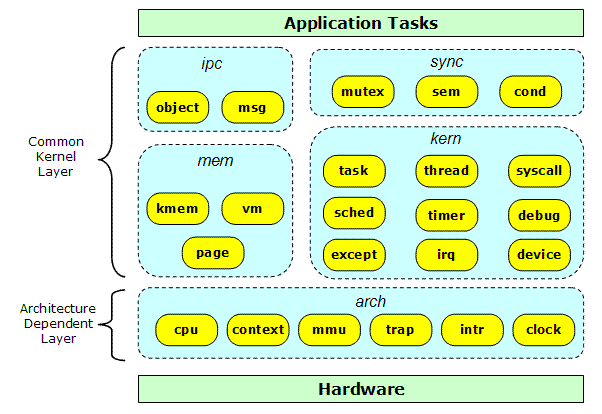
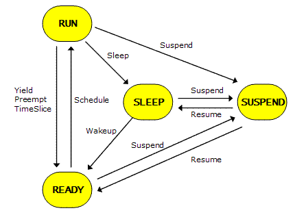
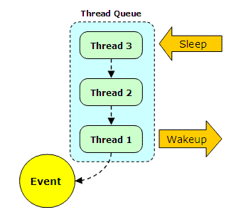
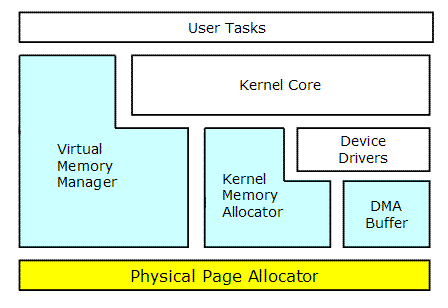
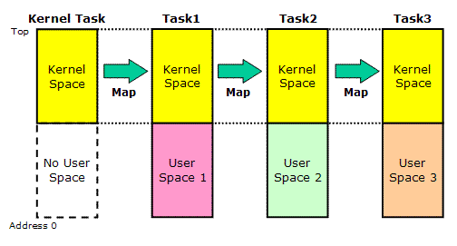
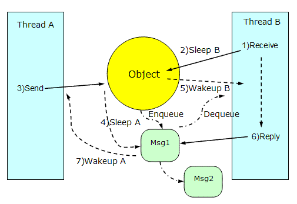
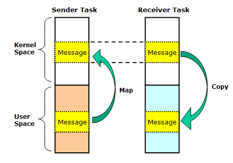
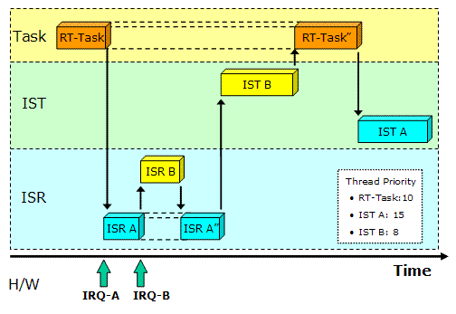

|
|||||||||||||||||||||||||||||||||||||||||||||||||||||||||||||||||||||||||||||||||||||||||||||||||||||||||||||||||||||||||||||||||||||||||||||||||||||||||||||||||||||||||||||||||||||||||||||||||||
| Prex Home > Document Index > Kernel Internals | |||||||||||||||||||||||||||||||||||||||||||||||||||||||||||||||||||||||||||||||||||||||||||||||||||||||||||||||||||||||||||||||||||||||||||||||||||||||||||||||||||||||||||||||||||||||||||||||||||
Prex Kernel InternalsVersion 1.6, 2008/09/17Table of Contents
IntroductionThis document describes the design and implementation of the Prex kernel. For a full description of the Prex kernel interface, see the following documents. Design PhilosophyThe Prex kernel focuses the following points to be designed.
PortabilityPortability is the most important point for the kernel design in Prex. The Prex kernel is divided into two different layers - a common kernel layer and an architecture dependent layer. Any routine in the common kernel layer must not access to the H/W by itself. Instead, it must use the H/W access services provided by the architecture dependent layer. ScalabilityIn order to obtain higher scalability, the kernel does not limit the maximum number of the kernel objects to create. So, the resources for all kernel objects are allocated dynamically after system boot. This can keep the memory prerequisite smaller than the static resource allocation. This means that the kernel can create any numbers of threads, objects, devices, events, mutexes and timers as far as usable memory remains. The kernel supports both of MMU and MMU-less systems. So, most components of the kernel are designed carefully to work without MMU. ReliabilityWhen the remaining memory is exhausted, what should OS do? If the system can stop with panic() there, we can prevent many error checks in the kernel. But obviously, this is not allowed on the reliable system. Even if the memory is exhausted, a kernel must continue to do its jobs. So, all kernel codes are always checking the error status returned by the memory allocation routine. In addition, the kernel must not crush anytime even if any invalid parameter is passed via kernel API. Basically, the Prex kernel code is written with "garbage in, error out" principle. The Prex kernel never stops even if any malicious program is loaded. InteroperabilityAlthough the Prex kernel was written from scratch, its applications will be brought from the other operating systems like BSD. So, the system call interface is designed with consideration to support generic OS API like POSIX or APIs for generic RTOS. The error code for the Prex system call is defined as the same name with POSIX. For example, EINVAL for "Invalid argument", or ENOMEM for "Out of memory". So, peoples do not have to study new error codes if they already have skills about POSIX programming. This is important point to write applications and to read the kernel code because study of a new error scheme will cause pain for developers. In addition, it simplifies the POSIX emulation library because it does not have to remap the error code. MaintainabilityAll kernel codes are kept clean and simple for the maintenance. All codes are well-commented and consistent. It is easy to add or remove new system call into the kernel. The kernel has the debugging facility like the diagnostic message or the dump of the kernel objects. Kernel OverviewKernel StructureThe following figure illustrates the Prex kernel structure.
 Each kernel object belongs in one of the following groups.
*) Since all messages in Prex are transferred among threads, the name of "IPC" is not appropriate. However, "IPC" is still used as a general term of the message transfer via the kernel, in Prex. Naming ConventionThe name of "group/object" in figure 1 is mapped to "directory/file" in the Prex source tree. For example, the thread related functions are located in "kern/thread.c", and the functions for semaphore are placed in "sync/sem.c". In addition, there is a standard naming convention about kernel routines. The method named bar for the object named foo should be named "foo_bar". For example, the routine to create a new thread is named "thread_create", and locking mutex will be "mutex_lock". This rule is not applied to the name for the local (private) functions. Kernel ServiceThe Prex microkernel has kernel calls to support the following:
ThreadThread Control BlockThe thread control block includes data for owner task, scheduler, timer, IPC, exception, mutex, and context. The following thread structure is most important definition in the kernel codes.
struct thread {
int magic; /* magic number */
task_t task; /* pointer to owner task */
struct list task_link; /* link for threads in same task */
struct queue link; /* linkage on scheduling queue */
int state; /* thread state */
int policy; /* scheduling policy */
int prio; /* current priority */
int baseprio; /* base priority */
int timeleft; /* remaining ticks to run */
u_int time; /* total running time */
int resched; /* true if rescheduling is needed */
int locks; /* schedule lock counter */
int suscnt; /* suspend counter */
struct event *slpevt; /* sleep event */
int slpret; /* sleep result code */
struct timer timeout; /* thread timer */
struct timer *periodic; /* pointer to periodic timer */
uint32_t excbits; /* bitmap of pending exceptions */
struct queue ipc_link; /* linkage on IPC queue */
void *msgaddr; /* kernel address of IPC message */
size_t msgsize; /* size of IPC message */
thread_t sender; /* thread that sends IPC message */
thread_t receiver; /* thread that receives IPC message */
object_t sendobj; /* IPC object sending to */
object_t recvobj; /* IPC object receiving from */
struct list mutexes; /* mutexes locked by this thread */
struct mutex *wait_mutex; /* mutex pointer currently waiting */
void *kstack; /* base address of kernel stack */
struct context ctx; /* machine specific context */
};
Thread CreationA thread can be created by thread_create(). The initial states of newly created thread are as follows:Table 1. Initial thread state
Since new thread is initially set to the suspended state, thread_resume() must be called to start it. Creating a thread and loading its register state are isolated in different routines. These two routines are used by fork(), exec(), and pthread_create() in the POSIX emulation library. Table 2. Usage of thread_create()/thread_load()
The address for the stack pointer is also set by thread_load(). Since the Prex kernel does not allocate any stack buffer for user mode threads, the parent thread has responsible to allocate it. Thread TerminationThe kernel will usually release all resources owned by the terminated thread. But, there are some complicated processes to release the resources. For example, the priority adjustment may be required if the thread inherits its priority. If the thread is terminated with mutex locked, all threads waiting for that mutex will sleep forever. So, the mutex held by the terminated thread must be unlocked, or change its mutex owner if some thread is waiting for. In general, there is a known issue about the thread termination. If the termination target is the current thread, the kernel can not release the context of the current thread because the thread switching always requires current context. There are the following 3 solutions for this.
Thread SuspensionEach thread can be set to the suspended state by using thread_suspend(). Although a thread can be suspended any number of times, it does not start to run unless it is resumed by the same number of suspend. Kernel ThreadA kernel thread is always executed in kernel mode, and it does not have user mode context. The scheduling policy is set to SCHED_FIFO by default. Currently, the following kernel threads are running in kernel mode.
Idle ThreadAn idle thread runs when no other thread is active. It has the role of cutting down the power consumption of a system. An idle thread has FIFO scheduling policy, and it does not have time quantum. The lowest scheduling priority (=255) is reserved for an idle thread. An idle thread is just a forever-loop to call the machine dependent routine to cut power. The following thread_idle() routine is called at the end of the kernel initialization.
void
thread_idle(void)
{
for (;;) {
machine_idle();
sched_yield();
}
}
The machine_idle() routine will program the platform H/W to the low power mode. This is typically invoking the power saving (halt) instruction supported by the processor. If any interrupts are occurred in this low power mode, it must be returned immediately from machine_idle(). Then, the idle thread will call sched_yield() to check the re-scheduling. TaskTask CreationThe task can be created by using task_create(). New child task will have the same memory image with the parent task. Especially text region and read-only region are physically shared among them. The parent task receives the new task ID of child task from task_create(), but child task will receive 0 as task ID. The initial task states are as follows: Table 3. Initial task state
If the parent task is specified as NULL for task_create(), all child state are initialized to default. This is used in exec() emulation. Task SuspensionWhen the task is set to suspend state, the thread suspend count of all threads in the task is also incremented. A thread can start to run only when both of the thread suspend count and the task suspend count becomes 0. Kernel TaskA kernel task is the special task that has only an idle thread and the interrupt threads. It does not have any user mode memory. Task CapabilityPrex supports a security framework named "task capability". Each task will be assigned its own capabilities for various operations. When a task tries to do a privileged operation, the kernel, device drivers and system servers will check the appropriate bit in the task capability. Table 4. Task capabilities
SchedulerThread PriorityThe Prex scheduler is based on the algorithm known as priority based multi level queue. Each thread is assigned the priority between 0 and 255. The lower number means higher priority like BSD UNIX. It maintains 256 level run queues mapped to each priority. The lowest priority (=255) is used only for an idle thread. A thread has two different types of priority:
Although the base priority and the current priority are same value in almost conditions, kernel will sometimes change the current priority to avoid "priority inversion". The following table shows the priority class for various thread types. Table 5. Thread Priorities
Thread StateEach thread has one of the following states. Figure 2. Thread States
A thread is always preemptive even in kernel mode. There are following 4 events to switch thread: Table 6. Events to switch thread
Scheduling PolicyThere are following three types of scheduling policy.
In early Prex development phase, SCHED_OTHER was implemented as a traditional BSD scheduler. Since this scheduler changes the thread priority dynamically, it is unpredictable and does not fit the real-time system. Recently, SCHED_OTHER policy was dropped from Prex to focus on real-time platform. Scheduling ParameterAn application program can change the following scheduling parameters via kernel API.
Scheduling LockThread scheduling can be disabled by locking the scheduler. This is used to synchronize thread execution to protect accessing to the global resources. Since an interrupt handler can run while scheduling lock state, it does not affect to the interrupt latency. The scheduling lock can be performed by sched_lock()/sched_unlock() kernek functions. Sleep & WakeupIf a thread must wait some events, it should enter sleep state and release CPU resource for other thread. The thread can sleep by calling the sched_tsleep() kernel function. And then, to wakeup the sleeping thread, the thread can use one of the sched_wakeup() and sched_wakeone(). The kernel event consists of the queue of the sleeping threads. Since each event has its own name, it is easy to know which event the debugee is waiting for.
 DPCDPC (Deferred Procedure Call) is used to call the specific function at some later time with a DPC priority. It is also known as AST or SoftIRQ in other kernels. DPC is typically used by device drivers to do the low-priority jobs without degrading real-time performance. Each DPC routine is called by the DPC thread which works as a kernel thread. The requested DPC request is inserted into the DPC queue, and that request is processed by DPC thread at later time. All interrupts are enabled and the scheduler is unlocked when the DPC routine is called. Memory ManagementPhysical Page AllocatorThe physical page allocator provides the service for page allocation/deallocation/reservation. It works as a bottom layer for other memory managers.
 The important point here is that the Prex kernel does not swap out any pages to the disk devices. This is a significant design policy to obtain real-time performance and system simplicity. Kernel Memory AllocatorThe kernel memory allocator is optimized for the small memory foot print system. To allocate kernel memory, it is necessary to divide one page into two or more blocks. There are following 3 linked lists to manage used/free blocks for kernel memory.
Currently, it can not handle the memory size exceeding one page.
Instead, a driver can use page_alloc() to allocate large memory.
The kernel maintains the array of the block headers for the free blocks. The index of an array is decided by the size of each block. All block has the size of the multiple of 16. free_blks[0] = list for 16 byte block
free_blks[1] = list for 32 byte block
free_blks[2] = list for 48 byte block
.
.
free_blks[255] = list for 4096 byte block
In general, only one list is used to search the free block for a first fit algorithm. However, the Prex kernel memory allocator is using multiple lists corresponding to each block size. A search is started from the list of the requested size. So, it is not necessary to search smaller block's list wastefully. In most of the "buddy" based memory allocators, their algorithm are using 2^n bytes as block size. But, this logic will throw away much memory in case the block size is not fit. So, this is not suitable for the embedded systems that Prex aims to. Virtual Memory ManagerA task owns its private virtual address space. All threads in a same task share one memory space. When new task is made, the address map of the parent task will be automatically copied. In this time, the read-only space is not copied and is shared with old map. A kernel provides the following functions for VM:
The VM allocator is using the traditional list-based algorithm. The kernel task is a special task which has the virtual memory mapping for kernel. All other user mode tasks will have the same kernel memory image mapped from the kernel task. So, kernel threads can work with the all user mode task context without switching memory map.
 Since the Prex kernel does not do page out to an external storage, it is guaranteed that the allocated memory is always continuing and existing. Thereby, a kernel and drivers can be constructed very simply. Note: "Copy-on-write" feature was supported with the Prex kernel before. But, it was dropped to increase the real-time performance. IPCThe message passing model of Prex is very simple compared with other modern microkernels. The Prex message is sent to the "object" from thread to thread. The "object" is similar concept that is called as "port" in other microkernel. ObjectAn object represents service, state, or policies etc. For the purpose of object manipulation, the kernel provide 3 basic functions: object_create(), object_delete(), object_lookup(). The Prex task will create an object to publish its interface to other tasks. For example, server tasks will create objects like "proc", "fs", "exec" to allow clients to access their services. And then, client tasks will send a request message to these objects. An actual entity of the object is stored in kernel space, and it is protected from user mode code. The object data is managed with the hash table by using its name string. Usually, an object has a unique name within a system. To send a message to the specific object, the sender must obtain the ID of the target object by using object_lookup(). An object can be created without its name. These objects can be used as private objects for threads in the same task. MessageEach IPC message must include the message header in it. The kernel will automatically store the sender task's ID into the message header. This mechanism ensures the receiver task can get the exact task ID of the sender task. Therefore, receiver task can check the sender task's capability for various secure services.
struct msg_header {
task_t task; /* id of send task */
int code; /* message code */
int status; /* return status */
};
It is necessary to recognize the pre-defined message format between sender and receiver. Messages are sent to the specific object using msg_send(). The transmission of a message is always synchronous. This means that the thread which sent the message is blocked until it receives a response from another thread. msg_receive() performs reception of a message. msg_receive() is also blocked when no message is reached to the target object. The receiver thread must answer the message using msg_reply() after it finishes processing. The receiver thread can not receive another message until it replies to the sender. In short, a thread can receive only one message at once. Once the thread receives message, it can send another message to different object. This mechanism allows threads to redirect the sender's request to another thread. A thread can receive a message from the specific object which is created by itself or thread in same task. If the message has not arrived, it blocks until any message comes in. The following figure shows the IPC transmit sequence of Prex. Figure 6. IPC Transmit Sequence Message TransferThe message is copied to task to task directly without kernel buffering. The memory region of sent message is automatically mapped to the receiver's memory within kernel. This mechanism allows to reduce the number of copy time while message transfer. Since there is no page out of memory in Prex, we can copy the message data via physical memory at anytime. Figure 7. IPC message transfer Exception HandlingA user mode task can specify its own exception handler with exception_setup(). There are two different types of exception.
Kernel supports 32 types of exception. The following pre-defined exceptions are raised by kernel itself. Table 7. Kernel exceptions
POSIX emulation library will setup its own exception handler to convert the Prex exceptions into UNIX signals. It will maintain its own signal mask. And, it transfer control to the actual POSIX signal handler that is defined by the user mode process. Interrupt FrameworkPrex defines two different types of interrupt service to optimize the response time of real-time operation. Interrupt Service Routine (ISR)ISR is started by an actual hardware interrupt. The associated interrupt is disabled in ICU and CPU interrupt is enabled while it runs. If ISR determines that its device generates the interrupt, ISR must program the device to stop the interrupt. Then, ISR should do minimum I/O operation and return control as quickly as possible. ISR will run within the context of current running thread at interrupt time. So, only few kernel services are available within ISR. ASSERT() macro can be used to detect the invalid function call from ISR. Interrupt Service Thread (IST)IST is automatically activated if ISR returns INT_CONTINUE to kernel. It will be called when the system enters safer condition than ISR. Any interrupt driven I/O operation should be done in IST not ISR. Since ISR for same IRQ may be run during IST, the shared data, resources, and device registers must be synchronized by using irq_lock(). IST does not have to be reentrant, since it is not interrupted by same IST itself. Interrupt Nesting & PriorityEach ISR has its logical priority level, with 0 being the lowest priority. While one ISR is running, all lower priority interrupts are masked off. This interrupt nesting mechanism avoids delaying of high priority interrupt events. IST is executed as a normal thread dispatched by the scheduler. So, the interrupt thread which has higher priority is executed first. The driver writer can specify the thread priority of IST when IST is attached to the specific interrupt line. The important point is that even a user mode task can be performed prior to an interrupt thread. The following figure is the sample of the Prex interrupt processing.

Interrupt Lockingirq_lock() & irq_unlock() are used to disable all interrupts in order to synchronize the access to the kernel or H/W resource. Since irq_lock() increments a lock counter, irq_unlock() will automatically restore to the original interrupt state when locking count becomes 0. So the caller does not have to save the previous interrupt state. Interrupt StackIf each ISR uses the kernel stack of the current running thread, the stack area may be over-flow when continuous interrupts are occurred at one same thread. So the kernel stack will be switched to the dedicated stack while ISR is running. TimerKernel TimersThe kernel timer provides the following feature.
Timer JitterThe periodic timer is designed to minimize the deviation between desired and actual expiration. Device I/O ServiceThe Prex device driver module is separated from the kernel, and this module is linked with the kernel at the boot time. The kernel provides only simple and minimum services to help the communication between applications and drivers.Device ObjectSince the Prex kernel does not have the file system in it, the kernel provides a device object service for I/O interface. The device object is created by the device driver to communicate to the application. Usually, the driver creates a device object for an existing physical device. But, it can be used to handle logical or virtual devices. Driver InterfaceThe interface between kernel and drivers are defined clearly as "Driver Kernel Interface". The kernel provides the following services for device drivers.
Application InterfaceThe kernel device I/O interfaces are provided to access the specific device object which is handled by a driver. The Prex kernel provides the following 5 functions for applications.
MutexPriority InheritanceThe thread priority is automatically changed at one of the following conditions.
There are following limitations about priority inheritance with Prex mutex.
DebugThere are following debugging support functions:
The output routine for printf() is initially set to the function in the architecture dependent layer. However, the device driver can override this routine by using debug_attch() service. Architecture Dependent LayerThe interface to the architecture dependent layer is strictly defined by the Prex kernel. This interface is designed carefully to support various different architectures with minimum code changes. So, it is easy to port the Prex kernel to different architecture. The following functions must be provided by the architecture dependent layer. Table 8. H/W Interface
*) In case of no-MMU system, MMU related routines will be defined as no-operation routine. So, the kernel common layer can not assume MMU is always available. | |||||||||||||||||||||||||||||||||||||||||||||||||||||||||||||||||||||||||||||||||||||||||||||||||||||||||||||||||||||||||||||||||||||||||||||||||||||||||||||||||||||||||||||||||||||||||||||||||||
|
Copyright© 2005-2007 Kohsuke Ohtani |
|||||||||||||||||||||||||||||||||||||||||||||||||||||||||||||||||||||||||||||||||||||||||||||||||||||||||||||||||||||||||||||||||||||||||||||||||||||||||||||||||||||||||||||||||||||||||||||||||||